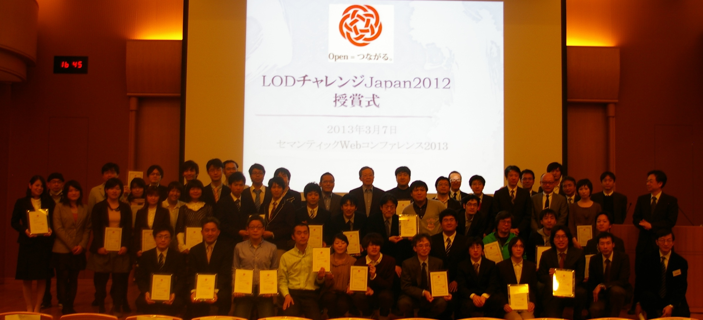
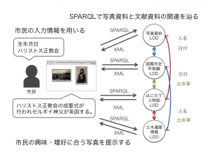

4月, 2013
LODチャレンジ2012活動報告
2013年4月8
日
LODチャレンジ実行委員会
Linked Open Data チャレンジ Japan 2012 活動報告
2012年度，LODチャレンジ実行委員会は，Linked Open Data チャレンジ Japan 2012（以下，LODチャレンジ2012）を開催いたしました．1年間の活動を振り返り，ここにご報告申し上げます．
LODチャレンジは，さまざまな分野でLinked Open Data (LOD) のデータづくりや活用にチャレンジされている方々による活動の発表の場として，新たなデータづくり、データ公開、データ連携の仕掛けやオープンデータ活用のアイディア、アプリケーションなどを「作品」として募集するコンテストです．日本におけるオープンデータのコミュニティの醸成と，オープンデータ活用のベストプラクティスを探ることを目的として，昨年度に続いて2度目の開催となりました．
オープンデータの分野には，いわゆる鶏と卵の問題があります．これは，
- アプリケーション開発に利用できる十分なデータセットがない
- 活用される見込みがなければデータセットを提供する利点を見出だせない
というものです．昨年度の開催を通して，コンテストが両者に対するインセンティブになり，日本におけるオープンデータを普及促進すると確信し，基本的な開催スキームは昨年度のものを継承しました．
今年度は，昨年度のデータセット，アイディア，アプリケーションの3部門に加え，新たにビジュアライゼーション部門を設立し，データの価値や魅力を引き出す作品の募集を行いました．4ヶ月にわたる募集期間(2012年10月1日～2013年1月31日)に，4部門合わせて計205作品もの応募があり，昨年度の73件を大きく上回りました(昨年度は3部門で募集)．実行委員会による厳重な審査の結果，4部門それぞれの応募作品の中から最優秀賞，優秀賞を1作品ずつ選定しました．また，スポンサー賞として計5作品，データ／基盤提供パートナー賞として計6作品，審査員特別賞として計14作品を選定しました．

応募作品が増大した理由は幾つか考えられますが，まずデータ／基盤提供パートナーとして計11の企業団体から，作品づくりに利用可能なリソース(データおよびサービス)を提供いただいたことが大きいと思います．利用条件が明確に示されおり，安心してリソースを活用することができました．一方，後述のイベント開催などを通して，幅広い層の参加者からの応募があり，エンジニアによる高度なアプリケーションや，女性ならではの視点のアイディアなど，発想豊かな作品が多く見られました．また，歴史やサブカルチャーなど，日本が世界に誇る文化に関連する作品や，政府・自治体が保有する公共データに関連する作品，オープンデータをフィールドで活用するアプリケーションなど，魅力的な作品が数多く寄せられました．いずれの作品も甲乙つけがたく，審査員を大いに悩ませました．
昨年度は，個人・団体が単独で取り組んだ作品の応募が多くありましたが，今年度の特徴として，他の応募作品のデータセットやアイディアを活用した作品づくりに取り組むなど，作品どうしにつながりが見られました．LODチャレンジのWebサイトで昨年度の作品エントリ情報を継続して公開した他，今年度も応募作品を順次公開して，作品の再利用を促進しました．さらに，昨年度アプリケーション部門最優秀賞の LinkData.org が作品の公開と共有の基盤となり，本サービスから計58作品の応募がありました．これらの情報がデータカタログの役割を果たし，応募作品どうしのつながりを生みました．
4ヶ月にわたる作品募集期間には，作品づくりに取り組む方々や，LODチャレンジに賛同の企業・団体の交流，および活動の活性化を目的として，LODチャレンジデーと称する講演会，勉強会，アイディアソン，ハッカソンなどのイベントを6都市で計10回開催しました．勉強会ではLODに関する技術的な入門講座を開催した他，オープンデータ活用に関するアイディアを出しあうアイデアソンを実施し，技術者でない参加者の参画を促しました．また，LODチャレンジに賛同いただいたスポンサー，データ／提供パートナーの企業団体と参加者との交流の機会を設け，オープンデータに取り組み皆さまによるコミュニティづくりに努めました．

こうしたイベントの開催に向けて，題材となるデータの獲得や，技術面の支援などが必要となりますが，実行委員会のリソースだけではこなせないものも多く，関連する組織・団体との積極的な連携を進めました．まず，人工知能学会SWO研究会，Creative City Consortium，横浜オープンデータソリューション発展委員会の各団体が，福井県鯖江市，二子玉川(東京都世田谷区)，横浜市で主催したイベントに共催し，オープンデータを活用したまちづくりに関するワークショップなどを通して，社会におけるオープンデータ活用を促進する活動を行いました．また，2012年12月に奈良で開催されたセマンティック技術に関する国際会議JIST2012と連携した国際ワークショップを企画して，海外研究者を交えて議論を行うなど，今後の海外への発信を見据えた取り組みを実施しました．さらに，作品募集締め切り後になりますが，2013年2月23日に世界各地で開催された「International Open Data Day」の日本開催に数名の実行委員が参加し，日本におけるオープンデータ活動の社会への浸透に努めました．
また，こうしたイベントの開催・参加レポートの他，受賞者からのメッセージ，技術情報などを，実行委員内外の方々に執筆を依頼し，技術コラムと題した計21件の記事をLODチャレンジ公式ブログに掲載した他，Facebook，Twitterなどのソーシャルメディアを活用し，積極的に情報を発信しました．
LODチャレンジのこうした取り組みが，日本におけるオープンデータの理解と普及推進に貢献したと評価され，2013年3月13日にオープンデータ流通推進コンソーシアム 利活用・普及委員会から優秀賞をいただきました．
最後になりましたが，LOD チャレンジの開催趣旨にご賛同のうえ，作品を応募くださった皆さま，イベントに参加下さった皆さま，スポンサー，データ／基盤提供パートナー，メディアパートナー，サポーターとして多大なるご支援，ご協力を賜りました企業，団体の皆さま，すべての皆さまに心より感謝申し上げます．
LODチャレンジ実行委員会
応募作品数
| データセット部門 | 87作品 |
| アイディア部門 | 50作品 |
| アプリケーション部門 | 44作品 |
| ビジュアライゼーション部門 | 24作品 |
| 計 | 205作品 |
受賞作品一覧
Linked Open Data チャレンジ Japan 2012 受賞作品発表のお知らせをご覧ください。
開催イベント一覧
|
開催日 |
開催場所 |
イベント名 |
主催者 |
イベント概要 |
|
2012/8/25 |
東京都 |
第1回 LODチャレンジデー |
LODチャレンジ実行委員会 |
ハンズオンセッションでは、参加者でLOD作品を作成．開催レポートはこちら． |
|
2012/9/1 |
愛知県名古屋市 |
第2回 LODチャレンジデー |
LODチャレンジ実行委員会 |
開催場所の名古屋市のデータをLOD化するデータソン（ハンズオンセッション）開催レポートはこちら． |
|
2012/10/6 |
福井県鯖江市 |
第3回 LODチャレンジデー「オープンデータハッカソン in 鯖江」 |
人工知能学会セマンティックウェブとオントロジー研究会 / LODチャレンジ実行委員会 |
鯖江市のデータを活用したアプリケーションの開発を行うハッカソン．参加レポートはこちら． |
|
2012/10/19 |
東京都 |
第4回 LODチャレンジデー |
LODチャレンジ実行委員会 |
チャレンジで利用可能なリソースの説明会 |
|
2012/10/27 |
東京都 |
第5回LODチャレンジデー 「アイデアソン」 |
LODチャレンジ実行委員会 |
アイデアソン形式のワークショップ．開催レポートはこちら． |
|
2012/11/10 |
東京都 |
オープンデータでツナグ街づくり/第6回LODチャレンジデー |
クリエイティブ・シティ・コンソーシアム |
アイデアソン形式のワークショップ |
|
2012/12/1 |
奈良県奈良市 |
第7回LODチャレンジデー in 奈良 「International Asian LOD Challenge Day」 |
LODチャレンジ実行委員会 |
海外研究者を交えたグループ討議．参加レポートは参加レポート． |
|
2012/12/15 |
北海道函館市 |
リンクト・オープン・データによる地域活性化に向けて／第8回LODチャレンジデー IN はこだて |
公立はこだて未来大学 LODラボ |
函館市のデータをLOD化するデータソン（ハンズオンセッション）．参加レポートはこちら． |
|
2013/1/12 |
東京都 |
LODサロン |
LODチャレンジ実行委員会 |
アイデアソン形式のワークショップ．参加レポートはこちら． |
|
2013/1/25,26 |
神奈川県横浜市 |
横浜オープンデータハッカソン −LODチャレンジデー in 横浜− |
横浜オープンデータソリューション発展委員会 |
横浜のアートと観光をテーマにしたアプリケーションを開発するハッカソン．参加レポートはこちら． |
技術コラム第21回：函館の歴史資料を用いた市民に新たな発見がある写真検索システム
「函館の歴史資料を用いた市民に新たな発見がある写真検索システム」でアイデア部門最優秀賞を受賞された高橋正輝さんから、メッセージをいただきました。
公立はこだて未来大学では、「函館市を中心とする函館圏地域の文化財をデジタル化して活用するための事業を、公立はこだて未来大学が担うことで、情報技術を活用した地域の文化発信の拠点をつくる」というねらいのもと、2010年度にデジタルアーカイブ研究センターを設置しました。また、同年度から、函館市の大量の歴史資料を所蔵する函館市中央図書館と連携し、デジタルアーカイブCMSの構築を進めてきました。現在、写真(絵葉書)や地図、ポスターなどの蓄積された画像データを目録(メタデータ)と併せて「函館市図書館所蔵デジタルアーカイブ デジタル資料館」で公開しています。この大量のデータを活用して、新たなコンテンツを作るための仕組みを構築するというテーマへの取り組みの中でLinked Open Dataに着目しました。
LODチャレンジ2012のアイデア部門において最優秀賞を頂いた「函館の歴史資料を用いた市民に新たな発見がある写真検索システム」は、函館のデジタルアーカイブにおける一万点以上の膨大な写真から、市民が懐かしさを感じることや、函館の歴史について意外な事実を知あることができる写真の検索の仕組みです。写真だけでなく、他の施設で所有する文献資料のような散在する歴史資料をLOD化することで、写真のメタデータや文献資料に記述された日付や人物名がリンクします。そのリンクを利用し、市民の属性情報や検索キーワードの入力をクエリにSPARQLで関連を辿り、関連付けられた写真を提示するシステムの構築を目指しています。
 システム概要
このような賞をいただけたのも、研究資料を提供してくださっている函館市のみなさまのおかげです。また、LODチャレンジ2012に函館の観光情報LODのエントリーを目指し、一年間共にLODの知識ゼロの状態からLODの取り組みや技術について学んだ高度ICT演習観光系プロジェクトに感謝しています。昨年12月の「LODチャレンジデーinはこだて」では、ゲストのみなさまにLODを通した地域活性化をテーマにディスカッションしていただき、貴重な知見を得る事ができました。LODの活動から、様々な人々との関係を築くことができ、このような成果に結びつけることができたことをとても嬉しく思っています。今後も、このアイデアを実現することを目指すだけでなく、地域の人々に価値のあるデータの公開・活用に取り組んで行きたいです。
公立はこだて未来大学 高橋 正輝